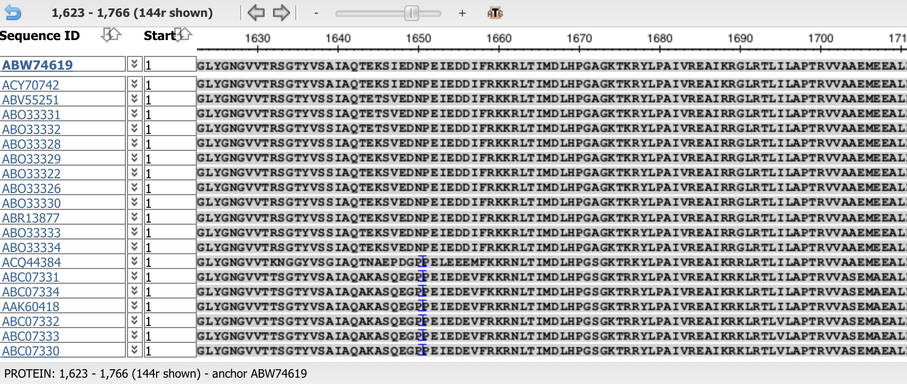
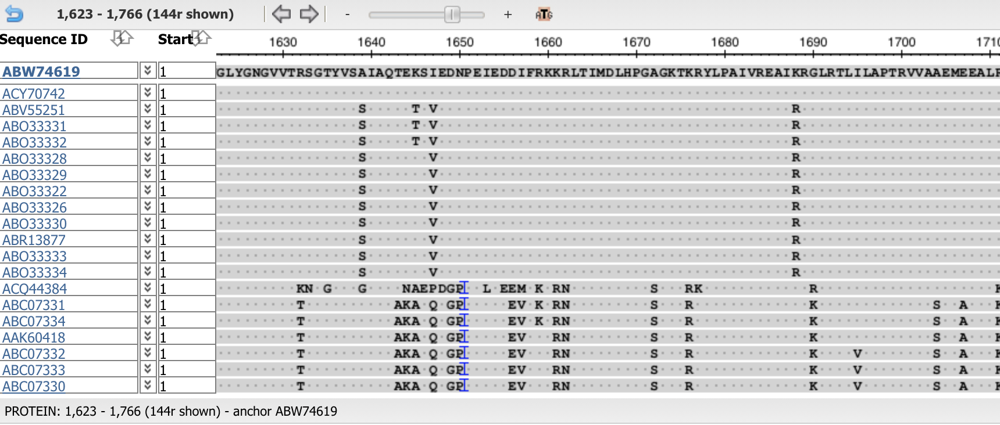
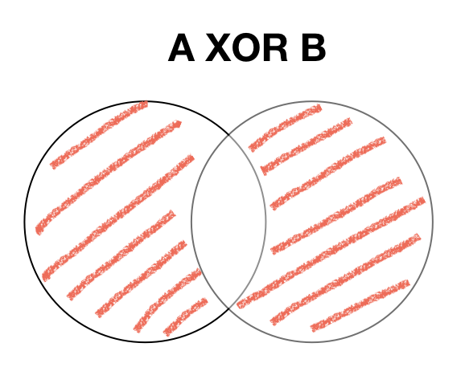
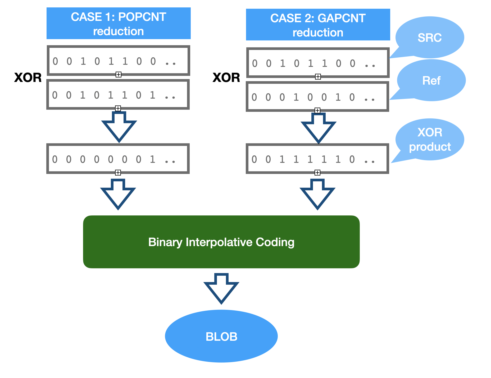
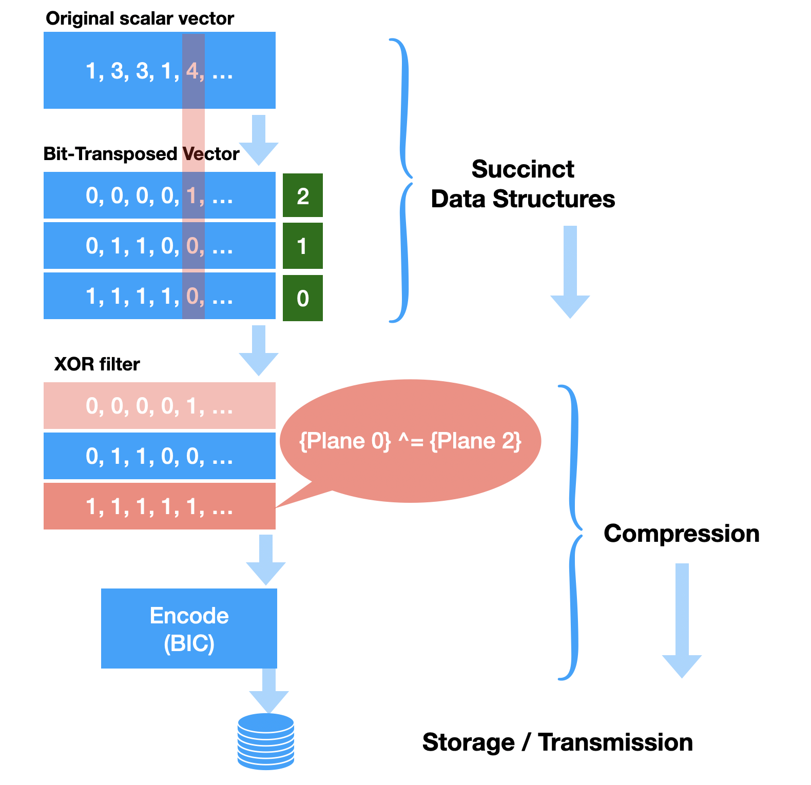
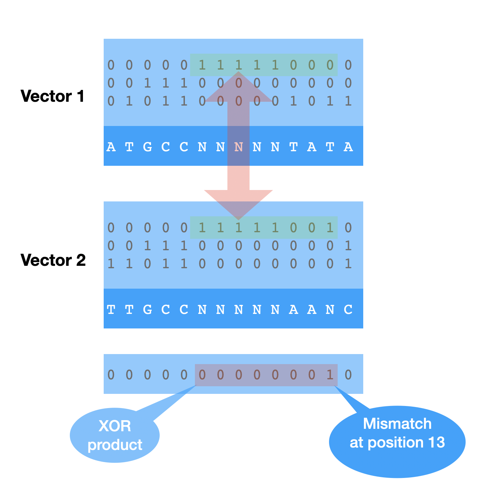

Application notes on XOR compression of bit-transposed vectors
Anatoliy Kuznetsov, Sept, 2020Introduction
BitMagic v.7.1.0+ implements XOR compression for bit-transposed vectors (integers and strings) and collections of sparse vectors (data frames). This type of compression fits well with the concept of bitwise transposition and can be successfully used on collections of correlated or aligned data frequently seen in the areas of big data like bioinformatics. XOR compression is a form of bitwise differential filter, it relies on searching of fragments of bit-strings to improve the compressibility of the data by the second stage of encoding (BitMagic uses Binary Interpolative Coding).
Use case example: compression of alignments (bioinformatics)
 
These are two screen shots from NCBI Multiple Alignment Sequence Viewer, demonstrating that aligned bio-informatics sequence often matches to the consensus sequence. The MSA Viewer shown, with consensus matching positions in the sequences are replaced with dots. This helps you to see the degree of similarity exposed by the nature of alignments. Such similarities can also be successfully used on the bit-level for compression. It is prposed to use logical operation XOR as a basis to determine similarity/complementarity.
Properties of logical XOR
XOR is a binary function "exclusive or", the resulting bit evaluates to one if only exactly one of the bits is set.

| A | B | A XOR B |
|---|---|---|
| 0 | 0 | 0 |
| 1 | 0 | 1 |
| 0 | 1 | 1 |
| 1 | 1 | 0 |
One of the important properties of XOR is that it is self-inverse. It means that if the result is XOR-ed with an argument it gives another argument.
a = c^b; b = c^a;This property that data can be “self-restored” by a second XOR is important for compression, cryptography and error correction schemes frequently used in computer systems. Popular example is xor swap saves on temporary variable, thus a register.
void XorSwap( int* x, int* y )
{
if (x != y)
{
*x ^= *y;
*y ^= *x;
*x ^= *y;
}
}Why XOR filter?
Bit-transposition succinct containers used in BitMagic automatically gives us a set of potentially correlating bit-vectors. The case we illustrate here is that XOR products can be more convenient for compression algorithm than the original vectors which is an oppotunity for a better compression rates with a very fast decompression.
Let us discuss the criteria on when the compression algorithms can benefit from the XOR product.
Hamming distance
Hamming distance is a metric for comparing two bit-vectors. Hamming distance is the number of bit positions in which the two bits are different. In order to calculate Hamming distance of two bit-vectors we perform XOR operation and then compute the population count (number of 1s) in the result. There are interpretations of Hamming distance as minimal edit distance or dissimilarity distance.
CASE 1: XOR similarity (POPCNT reduction)
If two bit-strings are similar (lets say even identical) they will have hamming distance of 0. Two bit-strings effectively cancel each other.
The more practical example is when two bit-strings are almost (or better say sufficiently similar).
In this case we can significantly reduce the complexity of our bit string based on the XOR with another. The product of XOR operation will contain less 1s thus can be efficiently be transformed into series of integers and compressed using Elias Gamma, Arithmetic Encoding or Binary Interpolative Coding.
Another variant of similarity is NXOR (Exclusive NOR), where instead of taking 1s we would take 0s and use it for inverted list encoding. This sub-case is important for compression of dense vectors.
CASE 2: XOR complement simplification (GAPCNT reduction)
Another case worth mentioning is potential search for Hamming dissimilar but complementary bit-strings.
Product of XOR operation can reduce its complexity: number of contiguous runs of 1s (and 0s) as a result of XOR. Two bit-strings can produce a product which its “simpler” (consists of a few runs than both arguments. XOR-GAPCNT is a quantitative score, but not a metric (distance function) satisfying triangle inequality.
These are two main forms of XOR filtering, positively affecting compression.
BitMagic overall compression scheme for bit-transposed vectors
Let’s discuss why XOR compression scheme is compelling in the context of BitMagic library. BitMagic library implements STL-like succinct (compact memory) containers using an equivalent transformation of bitwise transposition (some call it bit-slicing). This transformation can be seen as a VBR (Variable Bit Rate) succinct code. Compact memory representation is different from compression, because we don’t need to fully decompress data to use it and get access to individual elements.
Bit-transposition transforms a source vector of integers S into a collection of bit-vectors, where 1 bit-vector corresponds to each bit in the source vector. Such as bit-vector[0] (BV0) contains values of bit 0 in all integers of the source vector S. For a 32-bit integer we can have collection of 32 bit-vectors, each containing a one bit slice of information. It is of cause possible to restore any original value at any point.
Why this representation is succinct? For one, it is succinct for cases when the input does not occupy the whole bit-space (dynamic range). For example if source integers globally take only 3 bits - it will allocate just 3 bit-vectors, not 16, 32 or 64 (based on the size of the original data. Another factor is that bit-transposed sparse vectors take into account localities. If a sufficiently large area of the vector only needs 10 bits, the corresponding plane are will not be allocated (block size 64K elements) or allocated using an alternative strategy (list of GAPs of 1s and 0s).
When we are to serialize and save our transposed vector as a collection of bit-vectors we naturally want to reduce the size even more (compress the data). BitMagic implements Binary Interpolative Coding as a workhorse compression technique for bit-vectors, and XOR compression as a filter stage helps to reduce communication overhead (known as a Gap-Hamming problem).
XOR filter can find areas or parallel bit-wise similarity and areas of bit-wise complementarity to reduce complexity for the coding stage. XOR filter is complementary to both bit-transposition and Binary Interpolative Coding.
The big picture here is that original data transformed into memory compact form using bit-transpose (Phase 1) and then compressed to improve Storage costs and Transmission speed (Phase 2). Decode goes the other way around, only in many cases we need to do decompression and farther operate in succinct form saving operative memory.
The scheme can be described as: [BT-Transformer] -> [XOR-Transformer] -> [Encoder] -> [Decoder] -> [XOR Transformer]
Pros and Cons
XOR compression should really be called “XOR filter” because strictly speaking it does not compress the data, but helps later stage to compress better. Lets discuss the pros and cons of turning XOR compression ON.
Pros
- Our data is bit-transposed (memory compact) and natuarally prepared for XOR filter
- Natural fir for data models where data are aligned / correlated as a result of a data organization or modeling. This is a case for bio-informatics models: reads, sequence alignments, etc. XOR compression will take the advantage of alignment at the bit-level.
- Decompression is very fast, because it does not have to solve complex problem of searching for the best complement between lots of candidate planes and fragments.
- Reduces the work for BIC coding stage. XOR filtering takes compute time, but it also reduces the work for the encoder (and BIC encoder can be expensive). This is optimistically speculative advantage, based on assumption that XOR compression finds correlation or complementarity.
- Hamming metric and its derivative complementarity score can both be evaluated in one pass, it is possible to accelerate it with SIMD (SSE4.2 and AVX2) operations. The whole operation is data parallel, compute intensive (subject to HPC techniques).
Cons
Temptation here is to say that there are no cons. :-)
- If XOR filter cannot find similarities it will be a waste of compute time. This is true for all compression algorithms. XOR filter complexity depends on the number of reference vectors it needs to evaluate to find the best match. Each bit-block is compared to N / 2 potential references (N is number of bit planes in the bit-transposed vector or number of bit-vectors in a data-frame). Thus our theoretical complexity would be O(N^2).
- Bit-vectors in the collection become dependent on each other. Decompression must happen in the same order and cannot be multi-threaded easily (not impossible in principle, just harder).
Quick example
Code fragment below is from svsample02.
#include "bm.h"
#include "bmsparsevec.h"
#include "bmsparsevec_serial.h"
#include "bmundef.h" /* clear the pre-proc defines from BM */
void SDemo2()
{
svector sv1(bm::use_null); // NULL-able vector
svector sv2(bm::use_null);
for (unsigned i = 0; i < 128000; i+=2)
{
sv1.set(i, 8);
}
sv1.optimize();
sv2 = sv1; // copy sv1
sv_serializer_type sv_ser;
sv_deserializer_type sv_dser;
bm::sparse_vector_serial_layout
sv_lay0;
// the data pattern will allow XOR compression
// lets try to enable it!
sv_ser.enable_xor_compression();
assert(sv_ser.is_xor_ref());
sv_ser.serialize(sv1, sv_lay0);
// Get BLOB pointer and size
const unsigned char* buf = sv_lay0.data();
size_t sz = sv_lay0.size();
cout << "XOR compression enabled size=" << sz << endl;
// deserialize from the memory pointer
//
{
svector sv3(bm::use_null);
sv_dser.deserialize(sv3, buf);
assert(sv3.equal(sv1));
}
// disbale XOR compression
// please note that we re-use serializer and deserializer instances
// to save construction costs (memory allocations, etc)
//
sv_ser.disable_xor_compression();
assert(!sv_ser.is_xor_ref());
sv_ser.serialize(sv2, sv_lay0);
buf = sv_lay0.data();
sz = sv_lay0.size();
cout << "XOR compression disabled size=" << sz << endl;
// deserialize from the memory pointer
//
{
svector sv3(bm::use_null);
sv_dser.deserialize(sv3, buf);
assert(sv3.equal(sv1));
}
}
XOR compression of data frames
A data frame is a table or a collection of columns (vectors) in which each column contains values of one variable and each row contains one set of values from each column. If data frame columns are bit-transposed vectors - then we can apply XOR compression for the whole collection.
One notable case where XOR compression is compression of sequence alignments, where blocks of similarity have high probability to appear because of the inherent properties of alignment algorithms.
Code sample for data-frame XOR is available: rscsample05.
Important notes
- Vectors of different types can be mixed as part of the data frame XOR compression because all of them use bit-vectors as a basic presentation primitive. The setup of reference vector is NOT automatic like in previous case, you have to create a reference vector and attach it to all serializers.
- Vectors can be serialized independently (in different threads).
- Vectors cannot be de-serialized independently (because serialization will create data dependencies for XOR decode. Serialization and deserialization should happen in a specific order and be organized around the constructed reference vector.
Limits of the current implementation (v.7.2.0)
BitMagic v.7.2.0 only performs a search in the “parallel coordinates” of all bit-vectors in the collection. It tries to find fixed size windows of similarities and use it for XOR filter. Current XOR search is an Order-1 algorithm. If finds only one occurrence and uses it. Higher order methods may continue the search and try to find a chain of XORs until it can not improve the result.
Quality status
Implementation of BitMagic v.7.2.0 should be considered as an interface stable beta version (no known bugs), available for testing and non-critical use. More detailed stress testing is needed to reach full production status.
Speed and Compression?
At this moment there is only initial statistics which shows that XOR filtering improves serialization efficiency by 10%-50% (when it can improve) at the cost of 2x slower processing. More testing, enchmarking is needed to come with a better numbers for various cases. More to follow.
Links and References